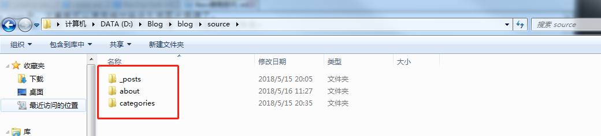
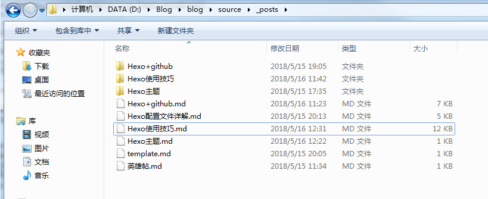

修改主题
打开 themes/next/_config.yml 文件，搜索 scheme 关键字，将你需用启用的 scheme 前面注释 # 去除即可。推荐使用next主题，因为可扩展性强，网上文章比较多，当然你也可以选择其他主题。1
2
3
4
5# Schemes
#scheme: Muse # 默认 Scheme，这是 NexT 最初的版本，黑白主调，大量留白
#scheme: Mist # Muse 的紧凑版本，整洁有序的单栏外观
scheme: Pisces # 双栏 Scheme，小家碧玉似的清新
#scheme: Gemini # 类似 Pisces
菜单页
配置
1 | menu: |
结构：Key: /link/ || icon
Key：其中 Key name 是一个名称，这个名称并不直接显示在页面上，只将用于匹配图标以及翻译，对应的翻译配置文件为D:\Blog\blog\themes\next\languages\zh-Hans.yml里面；
link：menu索引路径，在source目录下，创建命令：hexo new page “pagename”；
icon：图标,可以自定义FontAwsome官网；
区分一下什么是页面，什么是文章：
在hexo中menu下的内容都是新的页面我们可以通过hexo new page “pagename” 创建，hexo默认的页面只有home,archives,tags 三个，
之后我们写的博文就是文章，通过hexo new “name” 创建的name.md 文件在根目录的source_posts 下，
在每一个文章的头部，我们可以配置其tags或者categories内容，相当于文章是页面的下一级；
如图：

点击进去对应的menu二级目录，找到index.md就可以修改页面内容。
关联博客
1 | --- |
tags、categories都是支持数组的形式的，可以添加多个tags、categories。这样我们在tags、categories页面就可以看见相应的分类了。
新建404界面
在站点根目录下,输入 hexo new page 404 ,默认在 Hexo 站点下/source/404/index.md 打开新建的404界面，在顶部插入一行，写上 permalink: /404 ，
这表示指定该页固定链接为 http://“主页”/404.html。1
2
3
4
5
6---
title: #404 Not Found：该页无法显示
date: 2017-09-06 15:37:18
comments: false
permalink: /404
---
如果你不想编辑属于自己的404界面,可以显示腾讯公益404界面,代码如下：1
2
3
4
5
6
7
8
9
10
11
12
13
14
15
16
17
18<!DOCTYPE HTML>
<html>
<head>
<meta http-equiv="content-type" content="text/html;charset=utf-8;"/>
<meta http-equiv="X-UA-Compatible" content="IE=edge,chrome=1" />
<meta name="robots" content="all" />
<meta name="robots" content="index,follow"/>
<link rel="stylesheet" type="text/css" href="https://qzone.qq.com/gy/404/style/404style.css">
</head>
<body>
<script type="text/plain" src="http://www.qq.com/404/search_children.js"
charset="utf-8" homePageUrl="/"
homePageName="回到我的主页">
</script>
<script src="https://qzone.qq.com/gy/404/data.js" charset="utf-8"></script>
<script src="https://qzone.qq.com/gy/404/page.js" charset="utf-8"></script>
</body>
</html>
头像设置
修改头像
1 | # Sidebar Avatar |
可以使用http链接，也可以使用本地照片，把图片放入 themes/next/source/images 下,修改 avatar：
avatar: /images/avatar.gif
设置头像边框为圆形框
打开位于 themes/next/source/css/_common/components/sidebar/sidebar-author.syl 文件,修改如下:1
2
3
4
5
6
7
8
9
10
11
12.site-author-image {
display: block;
margin: 0 auto;
padding: $site-author-image-padding;
max-width: $site-author-image-width;
height: $site-author-image-height;
border: $site-author-image-border-width solid $site-author-image-border-color;
// 修改头像边框
border-radius: 50%;
-webkit-border-radius: 50%;
-moz-border-radius: 50%;
}
鼠标放置头像上旋转
打开\themes\next\source\css_common\components\sidebar\sidebar-author.styl 文件,修改如下:1
2
3
4
5
6
7
8
9
10
11
12
13
14
15
16
17
18
19
20
21.site-author-image {
display: block;
margin: 0 auto;
padding: $site-author-image-padding;
max-width: $site-author-image-width;
height: $site-author-image-height;
border: $site-author-image-border-width solid $site-author-image-border-color;
// 修改头像边框
border-radius: 50%;
-webkit-border-radius: 50%;
-moz-border-radius: 50%;
// 设置旋转
transition: 1.4s all;
}
// 可旋转的圆形头像,`hover`动作
.site-author-image:hover {
-webkit-transform: rotate(360deg);
-moz-transform: rotate(360deg);
-ms-transform: rotate(360deg);
-transform: rotate(360deg);
}
浏览页面的时候显示当前浏览进度
打开 themes/next/_config.yml ,搜索关键字 scrollpercent ,把 false 改为 true。1
2# Scroll percent label in b2t button
scrollpercent: true
如果想把 top按钮放在侧边栏,打开 themes/next/_config.yml ,搜索关键字 b2t ,把 false 改为 true。1
2
3
4
5# Back to top in sidebar
b2t: true
# Scroll percent label in b2t button
scrollpercent: true
特效
添加动态背景
如果next主题在5.1.1以上的话就不用我这样设置，
直接在主题配置文件中找到canvas_nest: false，把它改为canvas_nest: true就行了（注意分号后面要加一个空格）;
实现点击出现桃心效果
新建love.js文件并且将代码复制进去，然后保存。将love.js文件放到路径/themes/next/source/js/src里面，
然后打开\themes\next\layout_layout.swig文件,在末尾（在前面引用会出现找不到的bug）添加以下代码：1
2<!-- 页面点击小红心 -->
<script type="text/javascript" src="/js/src/love.js"></script>
love.js内容如下：1
2
3
4
5
6!function(e,t,a){function n(){c(".heart{width: 10px;height: 10px;position: fixed;background: #f00;transform: rotate(45deg);-webkit-transform: rotate(45deg);-moz-transform: rotate(45deg);}
.heart:after,.heart:before{content: '';width: inherit;height: inherit;background: inherit;border-radius: 50%;-webkit-border-radius: 50%;-moz-border-radius: 50%;position: fixed;}.heart:after{top: -5px;}.heart:before{left: -5px;}"),o(),r()}
function r(){for(var e=0;e<d.length;e++)d[e].alpha<=0?(t.body.removeChild(d[e].el),d.splice(e,1)):(d[e].y--,d[e].scale+=.004,d[e].alpha-=.013,d[e].el.style.cssText="left:"+d[e].x+"px;top:"+d[e].y+"px;opacity:"+d[e].alpha+";transform:scale("+d[e].scale+","+d[e].scale+") rotate(45deg);
background:"+d[e].color+";z-index:99999");requestAnimationFrame(r)}function o(){var t="function"==typeof e.onclick&&e.onclick;e.onclick=function(e){t&&t(),i(e)}}function i(e){var a=t.createElement("div");a.className="heart",d.push({el:a,x:e.clientX-5,y:e.clientY-5,scale:1,alpha:1,color:s()}),
t.body.appendChild(a)}function c(e){var a=t.createElement("style");a.type="text/css";try{a.appendChild(t.createTextNode(e))}catch(t){a.styleSheet.cssText=e}t.getElementsByTagName("head")[0].appendChild(a)}function s(){return"rgb("+~~(255*Math.random())+","+~~(255*Math.random())+","+~~(255*Math.random())+")"}
var d=[];e.requestAnimationFrame=function(){return e.requestAnimationFrame||e.webkitRequestAnimationFrame||e.mozRequestAnimationFrame||e.oRequestAnimationFrame||e.msRequestAnimationFrame||function(e){setTimeout(e,1e3/60)}}(),n()}(window,document);
修改文章内链接文本样式
修改文件 themes\next\source\css_common\components\post\post.styl，在末尾添加如下css样式：1
2
3
4
5
6
7
8
9
10
11// 文章内链接文本样式
.post-body p a{
color: #0593d3;
border-bottom: none;
border-bottom: 1px solid #0593d3;
&:hover {
color: #fc6423;
border-bottom: none;
border-bottom: 1px solid #fc6423;
}
}
其中选择.post-body 是为了不影响标题，选择 p 是为了不影响首页“阅读全文”的显示样式,颜色可以自己定义。
代码块自定义样式
打开\themes\next\source\css_custom\custom.styl:1
2
3
4
5
6
7
8
9
10
11
12
13
14code {
color: #ff7600;
background: #fbf7f8;
margin: 2px;
}
// 边框的自定义样式
.highlight, pre {
margin: 5px 0;
padding: 5px;
border-radius: 3px;
}
.highlight, code, pre {
border: 1px solid #d6d6d6;
}
添加顶部加载条
打开/themes/next/layout/_partials/head.swig文件，添加以下代码:
但是，默认的是粉色的，要改变颜色可以在/themes/next/layout/_partials/head.swig文件中添加如下代码（接在刚才link的后面）:1
2
3
4
5
6
7
8
9
10
11
12
13<style>
.pace .pace-progress {
background: #1E92FB; /*进度条颜色*/
height: 3px;
}
.pace .pace-progress-inner {
box-shadow: 0 0 10px #1E92FB, 0 0 5px #1E92FB; /*阴影颜色*/
}
.pace .pace-activity {
border-top-color: #1E92FB; /*上边框颜色*/
border-left-color: #1E92FB; /*左边框颜色*/
}
</style>
统计
在网站底部加上访问量
打开\themes\next\layout_partials\footer.swig文件,在copyright前加上画红线这句话：1
<script async src="https://dn-lbstatics.qbox.me/busuanzi/2.3/busuanzi.pure.mini.js"></script>
然后再合适的位置添加显示统计的代码：1
2
3
4
5<div class="powered-by">
<i class="fa fa-user-md"></i><span id="busuanzi_container_site_uv">
本站访客数:<span id="busuanzi_value_site_uv"></span>
</span>
</div>
在这里有两中不同计算方式的统计代码：
- pv的方式，单个用户连续点击n篇文章，记录n次访问量 :
本站总访问量次
2 uv的方式，单个用户连续点击n篇文章，只记录1次访客数
本站总访问量次
网站底部字数统计
切换到根目录下，然后运行如下代码:
$ npm install hexo-wordcount –save
然后在/themes/next/layout/_partials/footer.swig文件尾部加上：1
2
3
4<div class="theme-info">
<div class="powered-by"></div>
<span class="post-count">博客全站共{{ totalcount(site) }}字</span>
</div>
实现统计功能
在根目录下安装 hexo-wordcount,运行：
$ npm install hexo-wordcount –save
然后在主题的配置文件中，配置如下：1
2
3
4
5
6
7
8
9
10
11# Post wordcount display settings
# Dependencies: https://github.com/willin/hexo-wordcount
post_wordcount:
item_text: true
# 单篇 字数统计
wordcount: true
# 单篇 阅读时长
min2read: true
# 网站 字数统计
totalcount: true
separated_meta: true
更多主题优化
参照：next
插入图片
插入本地图片
绝对路径
当Hexo项目中只用到少量图片时，可以将图片统一放在source/images文件夹中，通过markdown语法访问它们。1

相对路径
图片除了可以放在统一的images文件夹中，还可以放在文章自己的目录中。文章的目录可以通过配置_config.yml来生成。
post_asset_folder: true
config.yml文件中的配置项post_asset_folder设为true后，执行命令$ hexo new blog_test，在source/_posts中会生成文章blog_test.md和同名文件夹blog_test。
将图片资源放在blog_test中，文章就可以使用相对路径引用图片资源了。
上面的操作我一般都是偷懒，复制一个md文件，然后同时创建一个同名字的文件夹

图床
未完，待补充，敬请期待